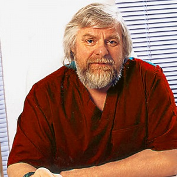
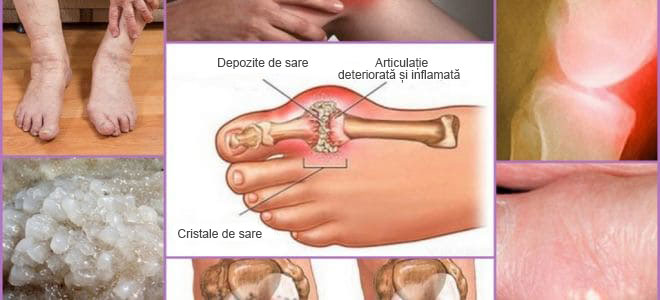
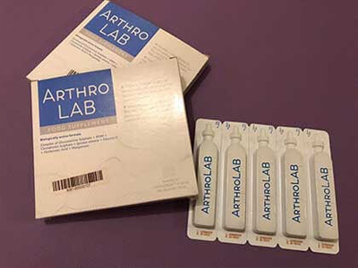
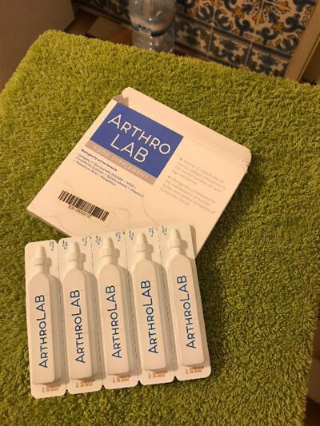
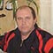

"Metodele românești de tratare a articulațiilor provoacă doar nedumerire". Renumitul reumatolog
german a dat un interviu sincer publicației române
Meduza
15.06.2020
Dr. Karl Kirschmayer (Karl Kirschmayer) - șef al Centrului de Reumatologie din
Berlin Tumorzentrum Eva Mayr-Stihl la Clinica de renume mondial Charite:
Există o singură cauză a bolilor articulare, dar anume aceasta este ignorată în totalitate
de medicii români.
Dr. Carl Kirschmeier: "În România, bolile articulare sunt încă tratate cu medicamente
învechite și ineficiente, care necesită o utilizare constantă pe tot parcursul vieții. În
timp ce în alte țări, articulațiile sunt tratate la fel de simplu ca un nas
curgător."
Anul trecut, Karl Kirschmeier a venit în România pentru a studia experiența colegilor săi
români. Ceea ce a văzut în România, a spus el, nu poate fi explicat. În țara noastră,
potrivit lui Carl, reumatologia a rămas blocată la mijlocul secolului trecut.
După discursurile de profil din Germania, Dr. Karl Kirschmeier a fost de acord să ofere un
interviu publicației. Ce nu i-a plăcut unui medic renumit în medicina română? Și de ce
susține el că cetățenii români cu articulații bolnave nu vor putea niciodată să devină
sănătoși?
- Vorbind în fața jurnaliștilor germani, ați spus că ceea ce ați văzut în România v-a
șocat. Puteți comenta acest lucru?
- Vreau să spun imediat că am o atitudine bună față de România, cultura voastră și cetățeni.
Dar starea în care se află medicina provoacă într-adevăr șocul medicilor europeni. Medicina
voastră e în urmă cu cel puțin 20 de ani. În orice caz, în tratamentul bolilor articulare și
a sistemului musculo-scheletic. Se poate spune că nu există o astfel de știință ca
Reumatologie în România.
Medicii din România sugerează medicamente învechite şi inefeficiente pentru a trata
articulațiile.
Cu toate acestea, aceste medicamente NU TRATEAZĂ ARTICULAŢIILE ŞI CARTILAJELE ci doar
ameliorează simptomele bolii - durere, inflamația, umflăturile. Acum imaginați-vă ce se
întâmplă la nivelul corpului. Când o persoană ia o pastilă, aplică un unguent anestezic sau
face o injecție, durerea trece. Dar, de îndată ce remediul încetează să acționeze - durerea
revine imediat.
Iar durerea este un semnal important, semnalează că există un proces patologic în
articulație. Pur și simplu prin înăbușirea durerii, articulațiile afectate sunt expuse la un
impact și mai devastator. Procesul de distrugere se accelerează de 3-5 ori și, în cele din
urmă, duce la schimbări ireversibile, la imobilizare completă și invaliditate.
Această metodă de combatere a durerii articulare în Europa nu a fost utilizată de mai mult
de 20 de ani. Remediile pentru durere sunt utilizate numai în cazuri extreme. În Germania,
acestea sunt vândute numai pe bază de rețetă și sub control strict.
Așa-numitele "condroprotectoare" sunt interzise complet, ca medicamente absolut frauduloase
și inutile.
Doctorii și farmaciștii voştri dăunează oamenilor! Este clar că vânzarea constantă a unor
remedii costisitoare pentru eliminarea simptomelor este mult mai profitabilă decât
vindecarea bolii o dată pentru totdeauna, restabilirea articulației care se prăbușește, de
asemenea, este imposibil!
- Și în Germania, cum stau lucrurile cu tratamentul articulațiilor?
- Toți medicii germani, de la profesori de reumatologie la terapeuți obișnuiți și
paramedici, au înțeles de multă vreme că este necesar să se elimine nu consecințele bolii,
ci cauzele acesteia. Este un angajament de vindecare completă, rapidă și sigură. Care este
cauza principală a leziunilor articulare? Este depunerea de orto-săruri din cauza
tulburărilor circulatorii și a circulației fluidului sinovial.
Uratele sunt adevărate săruri ale acidului uric, cauza dezvoltării gutei.
Osteofitele - sărurile calcinate, sunt cauza restului de 97% din bolile articulațiilor și
coloanei vertebrale. Toate tipurile de artrită și artroză, osteocondroză, osteoporoză,
reumatism, bursită și chiar higromă. Toate aceste boli au o cauză - depozite de osteofite.
Sărurile, depuse pe suprafețele articulației, precum șmirghelul ascuțesc țesutul
înconjurător - oase și cartilaj. Crescând, cristalele de orto-săruri încep să rănească
țesutul muscular, tendoanele, vasele și capilarele. Provoacând inflamații, infecții,
umflături și dureri severe.
În cazurile avansate, acumulările mari de orto-săruri pot rupe cu ușurință o parte a osului,
cu o mișcare bruscă, provocând astfel o incapacitate completă și imobilizând permanent
articulația.
O concepție greșită foarte periculoasă este că calciul pentru articulații este util. Da,
calciul este util, dar este util numai pentru articulațiile SĂNĂTOASE . Atunci când
articulațiile sunt deja dureroase sau crocante, înseamnă că au format deja un strat de
osteofite, iar calciul, pe lângă întărirea țesutului osos, întărește și
sărurile-osteofitele, agravând și accelerând creșterea lor.
În acest sens, reumatologii germani restaurează în primul rând circulația sângelui în
articulația bolnavă, astfel încât otro-sărurile acumulate de ani de zile să fie excretate
din ea. Aceasta, la rândul său, restabilește circulația normală a lichidului sinovial și
declanșează procesul de reparare a țesuturilor articulare.
"Creșteri" de orto-săruri pe suprafețele articulației - cauza principală a tuturor
patologiilor
De fapt, articulațiile umane sunt foarte regenerative, sunt capabile să se recupereze
independent, precum coada unei șopârle. Este necesar să-i ajutăm puțin în acest sens -
pentru a-i elibera de sărurile orto "care se lipesc" de ei, şi procesul va continua.
În anii '90 ai secolului trecut, oamenii de știință elvețieni au reușit să obțină o formă
specială de cvasi-vitamina B, așa-numitul alfa-artroferol. Se obține prin sinteza
ingredientelor naturale: ginkgo biloba, pant, acid hialuronic, plus un set de mai mult de 50
de extracte diferite.
Această substanță este capabilă să pătrundă în moleculele de orto-săruri și să le rupă din
interior – ca urmare, suprafețele articulațiilor sunt curățate, fluxul sanguin și circulația
fluidului sinovial sunt restabilite. PENTRU TOTDEAUNA! Sau mai bine zis, până când sarea se
acumulează din nou (dar acest lucru va dura câteva decenii). NU TREBUIE să folosiți remedii
în mod constant pentru a scăpa de durere și inflamație. Nu vă temeți că într-o zi
articulația se va "bloca" pentru totdeauna, pierzând complet mobilitatea și va fi necesară
proteza. Oamenii devin complet sănătoși de zeci de ani.
Când am văzut statisticile medicale româneşti, mi sa ridicat părul. Știți care este cea mai
frecventă cauză a dizabilității din România? Nu este nici cancerul, nici SIDA, nici
diabetul, ci osteoartrita! Cea mai simplă artroză, care în Germania este tratată timp de 2-3
săptămâni nu cu cel mai scump medicament, iar în România duce la invaliditate!
În Germania de azi, bolile articulare nu sunt considerate patologii periculoase, cu excepția
cazului în care, desigur, vorbim despre leziuni traumatice severe: fracturi, strivire,
rupturi etc. Durerea și inflamația în articulații spun doar că sunt „contaminate” cu săruri
și este timpul să le cureți. După un curs de 2-3 săptămâni de "curățare", articulațiile
revin la normal și problemele pot fi uitate în următorul deceniu.
Bolile articulare, care în România încearcă să "trateze" separat, în Europa au fost mult
timp unite într-o singură boală "Articulatio de sales" (Formarea articulațiilor saline).
Această boală include:
Gută
Artrită
Osteoartrită
Osteocondroză
Reumatism
Osteoporoză
Bursită
Sinovită
Higromă
Aceasta este o listă foarte scurtă, dar restul bolilor sunt doar subspecii acestor nouă
patologii majore. De exemplu, coxartroza este o subspecie de artroză etc.
Și întreaga listă lungă de boli se vindecă foarte simplu, cu curățarea banală a
articulațiilor. Absolut sigur, care nu necesită nici măcar asistență medicală și se efectuează
acasă.
- Cum se "curăţă" articulaţiile în Germania?
- Astăzi, există remedii speciale, care sunt concepute pentru a curăța articulațiile de
depozitele de sare. Acestea conțin alfa-artroferol. De exemplu, un instrument foarte bun este
conține alfa-artroferol într-o formă specială, ușor de digerat, datorită căreia are
o eficiență sporită.
De asemenea, un avantaj important al este că conține un complex de vitamine
artro-sistemice, macro- și microelemente concepute pentru a îmbunătăți funcționarea
țesuturilor articulare. Adică, are un efect complet de vindecare asupra țesutului osos și
cartilaginos, lichidul sinovial, fibrele musculare, pe țesuturile ligamentelor și tendoanelor.
Întreaga gamă posibilă de efecte complexe.
include mai mult de 50 de componente. Nu le voi enumera pe toate, voi enumera doar
cele de bază:
Vitamina C
Activează sinteza colagenului
Condroitina
Îmbunătățește metabolismul fosforic-calciu în țesutul cartilaginos
Acid hialuronic
Previne abraziunea suprafețelor articulare
Mangan
Sprijină sănătatea oaselor și a țesutului conjunctiv.
- din câte știm, nu este vândut în farmacii?
- Asta e ideea. Medicii români mai degrabă preferă să "hrănească" populația cu anestezice și
condroprotectoare cu tone, decât să se angajeze un tratament real.
În același timp, nu există nicio îndoială că reumatologii, cel puțin cei interesați de
metodele progresive de tratament, știu despre și despre abilitățile sale de
regenerare. Nu riscă însă să prescrie un remediul care nu este inclus în lista Ministerului
Sănătății.
Din câte știu, producătorul a vrut să intre pe piață. Dar nu li s-a permis să facă
acest lucru, inventând sute de bariere (birocrația din România este ineradicabilă). Este de
înțeles - dacă acest mijloc apare în farmacii, atunci mafia farmaciei va suferi pierderi
enorme. La urma urmei, farmacologia este o afacere astăzi! Chiar și în Europa. Dar în Europa,
afacerea este controlată de stat, iar ceea ce se întâmplă în România eu nu iau să judec, cu
siguranță vedeţi singuri mai bine.
- Ce ați recomanda persoanelor cu articulații bolnave care trăiesc în România?
- Oamenii obișnuiți, în special oamenii peste 50 de ani, suferă cel mai mult de întârzierea
medicinei române. Nu este vina lor, este doar modul în care sistemul de sănătate este aranjat.
Dar din fericire - există o cale de ieșire. Am convenit cu clinicile europene de Reumatologie
cu privire la posibilitatea distribuirii a remediului tuturor cetățenilor români care au
probleme cu articulațiile. Personalul a creat un centru special de distribuție, iar noi am
oferit lotul necesar de remediu. Prin urmare, acum orice locuitor din România poate obţine
cu reducere cu livrare prin poștă.
Acum vă voi spune ce să faceți pentru a obține
Necesar:
Completați o cerere
pentru a primi cu reducere înainte de
15.06.2020 inclusiv,
formularul va fi mai jos;
Așteptați apelul consultantului, el va răspunde la toate întrebările pe care le aveți. Lui
trebuie să-i spuneţi adresa de livrare;
Peste 5-7 zile, va fi necesar să veniți la poștă și să primiți coletul
a fost distribuit timp de 2 luni. Această oportunitate a fost deja utilizată de mai
multe mii de cetățeni. Toți cei care au primit cerem să evalueze - cât de bine le-a
ajutat produsul pe o scară de la 1 la 10. La moment, la sondaj au participat peste 3000 de
persoane, iar scorul mediu este de 9.97 din 10.
După cum puteți vedea, a ajutat de a găsi mobilitatea și a scăpa de durere deja la
mii de cetățeni și aveţi timp de a fi printre ei.
- Cât timp va fi distribuirea cu reducere a produsului?
- Așa cum am spus, perioada preliminară de încheiere a programului
15.06.2020. Dar vreau să vă avertizez imediat că pachetele cu
reducere au rămas destul de puține. Comenzile cresc ca un bulgăre de zăpadă. Funcționează
"gura lumii", oamenii transmit informații reciproc, sfătuiesc prietenii, comandă pentru rude.
Nici măcar nu am așteptat ca informațiile despre se vor răspândi atât de repede.
Până când remediul nu sa terminat, recomand tuturor persoanelor cu vârsta peste 45 de ani să
se aplice pentru primirea cu reducere pe site.
Comentarii:
Cristina78
Mulțumesc. Foarte util! Am comandat până mai este reducere! Consultantul a spus
că mai este, dar se termină repede. Am avut o veste bună.
Eugen
Sunt unul dintre cei care au încercat deja acest remediu. E cel mai bun lucru pe care l-am
văzut. Și eu am avut artroză cu experiență - timp de 7 ani mă chinuia această boală. Eram
deja pregătit să iau pastile și să mă injectez toată viața, dar, în final, după cursul
, durerea a dispărut. A plecat cu totul. Îl recomand tuturor - el va ajuta!
Ştefan
Am 63 de ani. Genunchii dor de la 53 de ani. Recent, durerea a devenit destul de
insuportabilă. Un doctor familiar (un prieten al copilăriei) a spus despre acest program și
a sfătuit să comand remediul 3 luni în urmă. Acum călăresc ca o carpă... Deși nu, nu este
necesar) doar alerg în general! Remediul este incredibil!

Ana
Am lăsat o cerere până este promoţie. Mi-au promis că va ajunge la poștă în cinci zile.
Sper.
Diana
Scopul principal al medicilor în opinia mea este de a lua cât mai mulți bani, nu mai sunt
interesați de nimic. La fiecare jumătate de an, stăteam la staţionar în spital. În acest an,
în toamnă, am spus că mi-a fost frică să mă înjunghii. Până la urmă, nici măcar nu m-am
uitat ce alte boli am și cum vor afecta organismul. Indiferență totală și prescrierea acelor
medicamente pentru care ei primesc de la firme. Poate că în altă parte nu este așa, dar nu
sunt sigură. Asta e medicina noastră. Și despre mijlocul european este o veste bună!
Lucian
Da, în țara noastră se poate muri doar. Am 59 de ani. Deja două treimi dintre colegi au
murit, restul abia se mișcă din cauza durerii veșnice în picioare-brațe-spate... Merită să
ne gândim
Radu
Instrumentul este într-adevăr de neimaginat în efect. L-am luat vara trecută (fiul l-a adus
din Europa). Guta a trecut! Până acum, nu există simptome. Sunt surprins. Mă simt la 5+. Vă
recomandăm să încercați toţi. Mai ales dacă acum dau cu o reducere, n-aveţi ce pierde!
Catarina
De asemenea, știm nu din auzite și el ma ajutat foarte mult. Am fost în mod
constant pe injecții, iar după deja a doua lună zbor!

Sabina
Deci mi-a plăcut remediul. Mai întâi luam alte medicamente, apoi le-am schimbat şi luat un
alt fel. Dar apoi dintr-o dată au încetat să acționeze. Apoi am mers la medic și mi-a
sfătuit să încerc (medic tânăr a fost, probabil, încă mai crede că medicina ar
trebui să fie pentru oameni, nu pentru pomparea banilor!). mi-a ajutat aproape
din prima dată - durerea a trecut aproape imediat, am început să iau un curs, așa cum a
sfătuit medicul. Peste patru săptămâni, am uitat că mă durea ceva. Mă simt ca în tinerețe!
Alexandru
Vecinul din țară, are 72 de ani, se plângea adesea de partea inferioară a spatelui. Dar în
ultima lună îl văd activ și vesel. Mi-a spus că a folosit , nepotul i-a adus de
undeva.
Raluca
În timp ce am citit pe forumurile germane comentariile germanilor despre , uite,
se termină chiar în fața ochilor! Slavă Domnului că am reușit să mă încadrez
în program. Și, de asemenea, cu reducere am reușit să obțin, de asemenea, e plăcut
Adrian Bordea
Am aflat despre în unul dintre forumurile pentru suferinzi articulare. Acolo
mulți se laudă cu rezultatele lor. M-am gândit să comand și eu. Beau doar 3 zile și deja
îmbunătățiri vizibile. Durerea a trecut, cronţarea a devenit înlocuită de linişte, o ușoară
umflare persistă, dar este mult mai bună decât a fost. În general, pe baza rezultatelor
cursului voi scrie, dar începutul mă bucură
Mioara
Mulțumesc. Am comandat și pentru soțul meu. Am întrebat consultantul când va fi vândut la
farmacie - el a spus că nu se ştie. Prin urmare, aceasta poate fi singura oportunitate de a
încerca acest remediu


Comentarii: